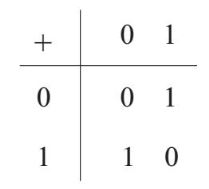
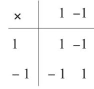
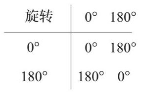
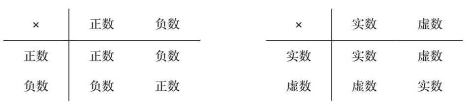
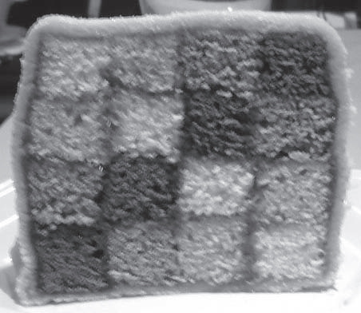
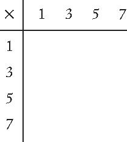
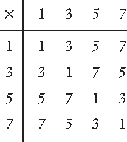
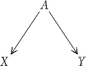
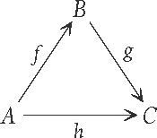
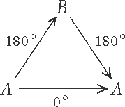

火焰冰激凌火焰冰激凌
火焰冰激凌火焰冰激凌原料
1个8英寸的扁圆形海绵蛋糕
200克树莓
1品脱香草冰激凌
4个鸡蛋的蛋白
175克白砂糖
方法
1. 将白砂糖倒入蛋白液搅拌至蛋白液凝固。
2. 将蛋糕放在烤盘中，把树莓堆在蛋糕表面，在中心处预留出足够的位置。再将冰激凌倒在树莓之上，砌成圆顶状，将蛋糕表面最外围一圈的位置预留出来。
3. 把凝固的蛋白液倒在冰激凌上面，注意确保中间不留空隙，并用蛋白液填满蛋糕表面最外围一圈的空白处。
4. 在预热至220°C的烤箱内烤至蛋糕的蛋白糖霜变成棕色。趁热食用。
火焰冰激凌可不只是一道甜点——它是科学的结晶。它的不同构成部分不只是为了吃起来美味，更有结构性的功用。蛋白糖霜和海绵蛋糕可以将冰激凌与烤箱内部的高温环境隔绝开来，由此，我们才能得到同时品尝热的蛋白酥皮和冷的冰激凌的刺激体验。
还有很多其他种类的食物也有类似的十分重要的结构性特征。三明治和寿司是为了方便人边走边吃而被发明出来的。传统的约克郡布丁其实是一个用来盛放你想吃的食物的可食用的盘子。法式酥盒是另一种用来装食物的可食用容器。面糊炸鱼中的面糊起到了避免鱼肉外侧被炸过头的作用。还有那种将蛋糕放在果肉挖空的橘子皮内部然后用篝火烤制的甜品，其中橘子皮不仅能避免蛋糕在烤制时掉出来，还能防止蛋糕直接接触篝火，并赋予蛋糕一种微微的橘子清香。
在上面这些美味食物的实例中，食物的结构都是一个十分重要的组成部分，在某些情况下，食物的味道会被结构影响甚至决定。这与一个“恐龙形状的蛋糕”有所不同，在这种情况下，蛋糕的形状和味道几乎可以说是彼此独立的。
范畴论研究的一个重要方面就是确定某个数学概念的哪一部分是结构性的——更像是火焰冰激凌而不是恐龙形状的蛋糕。范畴论会十分仔细地研究每一个组成部分在保持此数学概念的结构完整性中所扮演的角色。
建筑的结构性部分是什么样子的
有一次，我和一些朋友在路上看到一座建了一半的建筑。事实上可能建了还不到一半，它只是这座建筑的某个结构的一层外壳。我们纷纷猜测它到底会是一座什么类型的建筑。有些人试图通过回忆最近看到的关于这片区域要建什么建筑的新闻来找到答案。但作为一个数学家（并且是一个纯数学家），我的做法是：观察这座建筑，并试图通过“第一原理”来弄清楚，我眼前这个东西看起来到底像什么。
我忽然意识到两件事。第一，它看起来很像一个多层停车场。第二，任何处在类似的建造阶段的建筑看起来都很像一个多层停车场。一般而言，当我思考一座建筑的基本结构的时候，我会试着把各种多余的东西剔除掉：首先是家具和墙纸，以及图画之类的装饰，然后是窗子和门，再然后是所有的非承重墙。
但还有一种分析建筑结构的方法是反过来：把一座建筑一层层搭建起来，而不是拆解开来。因为最关键的建筑结构肯定要先于所有的装饰性结构存在。
很多数学领域都是关于结构的，而范畴论尤其如此。是什么支撑起了某个事物？哪些部分是你可以抽出来而不会让整个事物坍塌的？
这多少有点儿像我们之前讲过的关于平行公设的故事，在那个故事里，数学家们花费了几百年的时间试图弄清楚第五条公设是否必要——如果没有这条公设的话，几何学是会分崩离析，还是没有变化？在范畴论里，我们想研究的是公理的哪个部分使得这个公理及由其推导出的其他结论在某个特定的数学情境下成立。这很重要，因为它能帮助我们将某些结论从一个应用场景推广至另一个与前者稍有不同的应用场景，只要我们知道它的基石和支撑结构是什么即可。
这里有一个关于什么是整数的基石的思维实验。设想一下这种情况：数字2不再存在了。那么现在，哪些数字是质数？我们知道，质数是只能被1和它本身整除的数，而且1不算质数。
3还是质数，因为它只能被1和它自己整除。但4呢？原来的4除了1和它本身还能被2整除，但现在，2不存在了。所以4现在只能被1和4整除，于是4变成了一个“质数”。
5也仍然是质数。你可以将这一事实进行推广，并且很快意识到，任何原来是质数的数现在还是质数，因为它们并没有突然就变得能被某个新的东西整除了——我们并没有为正整数添加新的东西。（我们去掉了数字2，但我们并没有发明一个替代它的位置的新东西。）出现问题的是偶数，它们不再能被2整除了，因为2不存在了。
因此6现在是质数了，因为它不再能被3整除了。为什么这么说？这里我们就要特别注意能被3“整除”的具体含义：6=3×k，其中k是任意一个使等式成立的整数。但现在，6不再等于3乘以什么东西了，因为2不存在了。因此6只能被1和它本身整除。8和10也同理。
于是，我们现在得到了一个有趣的事实——数字现在可以用不同的方式表示为“质数”的乘积了。你能想出一个例子吗？比如下面这个数：
24=3×8=4×6
在我们这个新的没有2的整数世界里，3、8、4和6都是“质数”。因此，通过去掉数字2，我们破坏了数字的一条基本原则——每个数字被表示成质数乘积的方式是唯一的。
一个结构的三种版本
在健身房进行日常锻炼的时候，我通常会把电视调成静音，因为我更喜欢听着自己的音乐，它们总能驱使我更卖力地运动，但电视屏幕就在我的眼前，我没办法不看。有一次，我在健身房看了一部十分无聊的关于圣保罗大教堂修建过程的文献电视片，它的自动字幕看起来很不自然，用的是那种会让人觉得是机器人在说话的生硬字体。
除了知道圣保罗大教堂是由克里斯托弗·雷恩爵士设计的以外，我当时对它没有什么其他的了解，更不用说它的拱顶是如何建造的，建造它花了多长时间，以及它如何险些烂尾的历史。我甚至不确定自己是否真的欣赏它宏大而雄壮的美，我只知道它很大，而且很有名。
而从那部片子里，我了解到圣保罗大教堂的拱顶实际上由三个拱顶组成的：一个内部拱顶、一个外部拱顶，这两个拱顶都是可以直接看到的，以及第三个拱顶——夹在前两个拱顶中间，隐蔽地支撑着整个建筑结构。外部拱顶是你从伦敦市区的任何地方望过去都能看到的，这么多年来，它依然统治着伦敦的天际线，碎片大厦、“小黄瓜”大楼等摩天大楼的相继建成也并没有对它造成影响。大教堂的绝对高度并不是其独树一帜的真正原因——从1962年起，它就不再是伦敦最高的建筑了，而且碎片大厦几乎是它的三倍高。圣保罗大教堂真正的伟大之处在于其拱顶体积之巨带来了一个工程学上的难题：怎样才能在保证底部不坍塌的前提下用建筑结构支撑起如此巨大的东西？
内部拱顶的存在主要用于满足大教堂内部结构的审美需求，也就是说，大教堂内部空间的各个组成部分需要形成一个尺寸上的平衡，一个过于高大的拱顶会让教堂内部的整个空间变得十分压抑。实际上，直到我看了这部文献电视片，我才意识到我们在教堂内部看到的拱顶并不是我们在外面看到的那一个。
而这座建筑真正的神来之笔正是它的第三个拱顶，一个隐蔽的、结构性的拱顶，它使前面两个拱顶得以有机结合。前面两个拱顶太宽太平，不能起到支持拱顶顶端十分沉重的小圆顶结构的作用。因此，两个拱顶之间必须有一个更尖的锥形实体结构。这个拱顶本身看上去并不美，但它足够坚固，可以令人放心地支撑起整个拱顶的负重。
当时我还是一个在读博士，而这部电视片让我一下子找到了梳理我正在写的博士论文的灵感。我的论文同样包含三种对于同一结构的描述，第一种描述出于“内在”动机（该情境的内在逻辑），第二种描述出于“外在”动机（该情境的应用），以及第三种“隐蔽的”描述，其存在的唯一目的就是支撑该情境的整个结构，以及让前面两种描述有机结合起来。
这个故事对我个人的启发在于，很明显，雷恩爵士在建造之初并没有想好要怎样实现他所期待的效果。那时，建筑工人已经开始建造大教堂了，而雷恩仍然没有想出建造拱顶的方法；他只有一张关于这座教堂在最终完成时的蓝图，建造这三个拱顶的想法是后来才产生的。
我现在相信，内在动机和外在动机是有明显差别的，并且它们之间存在一个支撑性的结构用于联结二者；以及，如果一个人想到了一个不错的主意，那么实现它或证明它的办法在之后总会被发现。此外，在最终抵达伟大的成功之前，一个人可能会经历巨大的失败。现在，我十分欣赏圣保罗大教堂。
范畴论常常会研究同一个结构的不同方面。将事物翻转过来，从另一个角度看待它们是很有趣的，毕竟，只从单一的视角理解事物太局限了。数学史上的跳跃式发展往往出现在看起来不相关的研究领域建立起了联系，使得不同领域的信息和技术的交流、交换成为可能的时刻，这就像是搭建一座连接了两个原本孤立存在的岛屿的桥一样。
范畴论产生于代数拓扑学领域的研究。在本书中，我们已经了解了拓扑学中的很多概念，包括曲面、结、甜甜圈，以及如何让一个形状“连续变化”成另一个形状，就像捏橡皮泥一样。我们也遇到了代数中的一些概念，包括群、关系、结合律等。
代数拓扑学就相当于一条连接代数和拓扑学这两座“城市”的道路。建造这条道路最初的目的是用代数来研究拓扑学，但之后数学家们发现，这种沟通可以是双向的，即拓扑学也可以用于研究代数。范畴论的出现让这两座语言不通的城市得以交流。它让我们可以问出以下这些问题。
• 一组城市所具有的某些特征是否与另一座城市的某些特征相似？
• 如果我们把应用于一座城市的工具和技术迁移到另一座城市，它们还能发挥作用吗？
• 一座城市中事物之间的关系是否与另一座城市中事物之间的关系有类似之处？
范畴论并不一定有所有这些问题的答案，但它至少为我们提供了一种提出这些问题的语言，并且帮助我们弄清楚对于解答这些问题，哪些概念是重要的，哪些概念是无关的。
使一张光盘成为光盘的关键要素
有一次，我决定把一张光盘的自带标签撕掉。我已经忘记我这么做的具体原因了，也许是因为它太丑了，我不想再看到它了吧。当时是我第一次尝试制作一张属于自己的光盘，所以我买了一整盒可以粘贴的光盘标签，我很喜欢使用它们。我的计划是设计出一个新的光盘标签，然后把它贴在我自己的那张光盘上。我试着这么做了，但新的标签没能完全覆盖旧的标签，我仍然可以看到旧标签。
也许你觉得这是一个编造的故事，我能理解你，我自己都有类似的感觉。我的确无论如何都想不起来当时我为什么要把光盘的自带标签撕掉了，但我非常清晰地记得之后发生了什么。我撕掉了旧标签，于是发现剩下的是：一片透明的塑料。
我感觉自己特别愚蠢。是不是除了我以外地球上的所有人都知道光盘表面那亮闪闪的、标志性的部分，其实在结构上是光盘标签的一部分，而拿掉这部分之后，光盘只不过是一片透明的塑料？
类似的事情还发生在我挑选裙子的时候。我曾经对着一条裙子想：“除了上面那朵不好看的花以外，这是一条很美的裙子。”但当我开始研究如何只把这朵花去掉而保留裙子的整体设计时，我发现花与裙子是密不可分的，它是这条裙子的基本结构的一部分。于是我只好放弃了这条裙子。
在范畴论里，研究事物结构的一个很重要的方面是探索如果去掉这个结构的某些部分，这个结构会出现什么问题。这些探索都是为了让你能在一个结构不够显而易见的（数学）世界里准确理解事物运行的原理。这有点儿像学习不使用电动打蛋器打蛋白的方法。当你了解了电动打蛋器的工作原理后，你就会知道手打蛋白是完全可行的，这意味着即使身处一个没有电动打蛋器甚至没有电的厨房里，你也能打发蛋白。也许你正在森林里野炊，而且你真的需要用到打发的蛋白呢？算了，这并不重要。
一个数学版的“电动打蛋器”是关于我们如何解二次方程的。在第7章里，我们看到对于这样的二次方程：
x2- 3x+2=0
我们可以通过对等式左边进行因式分解来求解：
x2 - 3x+2=（x - 1）（x - 2）
我们断定，如果该表达式等于0，那么两个括号项中的一个一定等于0，所以要么是x - 1=0，这样的话x=1，要么是x - 2=0，这样的话x=2。因此这个二次方程有两个解。
但现在，我们假设这个问题的背景是一个一圈有6个小时的钟。你可以试着代入一些其他的值来看看等式左边会等于什么。比如，如果你让x=4，你就会得到：
x2 - 3x+2 =（4×4）-（3×4）+ 2
=16 - 12+2
=6
但对于有6个小时的钟来说，6就等于0，所以x=4其实也会让等式左边的表达式等于0。通过实际检验你会发现，如果x=5，则等式左边的表达式等于12，也就是等于0。这意味着1、2、4和5都是这个二次方程在6个小时的钟这个情境下的解。这是怎么回事呢？这些“额外的”解是从哪里来的呢？我们应该到哪里去找它们，以及我们如何确保我们已经穷尽了所有的解呢？
回答这些问题的关键在于回过头看看我们的解是怎么得出来的。一个决定性的中间步骤是我们说“其中一个括号项的值一定等于0”。这句话实际的意思是，如果两个东西相乘结果为0，那么其中一个肯定为0。然而，这个观点对于普通数字来说是对的，并不代表它对于一个有6个小时的钟这个情境而言同样正确。比如，存在如下反例：
3×2=6=0
4×3=12=0
这就是为什么在我们代入x=4的时候，两个括号项（x - 1）和（x - 2）的值都不为0，新的解却产生了。当x=4的时候，两个括号项的值分别为3和2，当x=5的时候，两个括号项的值分别为4和3。正是这两种“额外的”使两个事物相乘结果为0的方式使得这个二次方程产生了两个“额外的”解。
在这个例子中，我们来到了一个不具备我们所熟悉的数学结构的世界，也就是使两个数字相乘结果为0的唯一方法是让其中一个数字为0。当我们身处这个与往常不同的数学世界，或是身处任何其他没有这种数学结构的世界之中时，我们就需要在推理时特别地小心谨慎。在上文中，我们找出了一个适用于不同世界的解二次方程的重要结构。如果没有找到这个重要的工具，我们就必须耗费更多的精力才能确保我们找到了所有正确的解。
精打细算
如果你有很多钱，多到花不完，你就永远不必弄明白任何事物背后的运行原理了。因为不管是什么东西出现了问题，你都可以用钱来解决它——要么付钱请人修理，要么直接买一个新的。如果你足够富有的话，你也无须在意你每天究竟花了多少钱，虽然现实中的不少有钱人显然仍然对这件事很在意。
但如果你只是一个普通人，你就必须在意这件事，以避免让自己陷入入不敷出的深渊。即便你不是一个习惯性勤俭节约的人，弄清楚自己都在什么地方花了钱也是一件好事，因为这样一来，在必要的时候，你可以很快做出调整。
有些数学研究是以“不差钱”的方式进行的——你不需要担心自己会用尽（数学）资源，因而也就不会注意哪些资源被用了。与之形成对比的是范畴论，范畴论研究是以“勤俭节约”的方式进行的，或者至少你很清楚你在什么地方花费了哪些数学资源。换句话说，范畴论研究的目的是确保你在研究数学的每时每刻都要注意你采用了怎样的结构使得研究继续下去。有时，表面上来看，你似乎并没有用到某些数学结构，但有时候，隐蔽的使用更加重要，因为它是隐蔽的，所以你很容易在自己注意不到的情况下使用它。这有点儿像突然收到一笔金额不小的信用卡账单，原因是孩子们在手机上购买了游戏的很多额外付费项目，或是你不小心在国外使用了本国手机号的网络服务，结果不得不支付一大笔漫游费。
范畴论致力于记录数学资源的使用情况，不是因为在数学中资源会被突然用尽（幸好这不是数学资源通常的消耗方式），而是因为这样你就可以有目的性地用更少的资源解决某个问题。范畴论的初衷是在不同的数学世界之间建立联系，以及发展一些适用于不同世界，且不需要付出额外努力就可以直接使用的技术。
这就像我们刚才看到的二次方程的例子。这个例子用到的数学资源就是以下这个性质：
如果a×b=0，则a=0或者b=0（或两者都为0）。
如果你觉得你永远不会让自己陷入一个无法应用这一资源的世界之中，那么你肯定就不会在意你是否过于频繁地使用了它。但如果你关心模运算（钟面上的运算），或者只是关心自己陷入一个没有可用资源的世界的可能性，那么你就需要回过头重新审视所有你喜欢使用的方法和原理，弄明白你是在哪些情况下使用它们的，以及如何应对无法使用它们的情况。
一个更深刻的数学上的例子涉及“选择公理”。这条公理讲的是你可以无穷次地随意选择。在日常生活中，你也许会觉得做一个随意的选择很常见，比如从一顶帽子里摸出一张抽奖券。而选择公理说的是，你可以从无限多顶帽子的每一顶中摸出一张抽奖券。也许这句话听起来有点儿奇怪。实际上，连数学家都对这种表述是否奇怪存在分歧。
为了严格遵循逻辑规则，我们对于涉及“无穷”的过程总是需要非常小心。而这个还涉及随意选择的“无穷”过程尤其难以清晰界定。这也是为什么它成为一条单独存在的公理。数学家并不确定它是否应该被认为总是成立的，因此最好的方法就是在每次需要使用它的时候都尽可能地小心谨慎。
范畴论的一个分支就是专门研究这条公理不成立的领域的，这个分支的研究目的是探索在这条公理不成立的前提下，还有多少数学研究可以继续进行。
剥去其他后最后剩下的那部分
在剑桥的时候，我曾有幸坐在一位十分了不起的老教授旁边吃晚餐，那时候他大约已经90岁了。当时正值阿尔德黑儿童医院的丑闻被曝光，这家医院在未经患者及家属同意的情况下擅自摘除并保存死去儿童的身体器官。这位教授告诉我，他担心这件事会影响人们参加器官捐献的计划。他还说，这条丑闻的曝光促使他联系了阿登布鲁克医院，也即剑桥大学的教学医院，询问那里的医师在他死后他的身体对他们是否仍然有用。他年龄太大，已经不适合做器官移植了，但是那里的医师告诉他，他的骨骼对于面向医学生的医学教学仍然是有用的，所以他应该尽量避免因车祸去世而导致身体骨骼变形这种情况。（他是带着他特有的那种愉快的神情说这些话的。我不知道我老了以后是不是也能像他一样用这种轻松、积极的语气谈论我自己的死亡。）几年后，我听说他在家中去世了，我真心希望他的骨骼能如他所愿被用于医学教学。
骨骼显然不等同于一个完整的人，但它是理解人体如何工作的重要组成部分。它是人体的支撑结构。它与人的感觉、感情、思想等几乎没什么关系，但它是所有这些东西依附的框架。这也是在数学中我们致力于研究结构的主要原因。
逻辑学是数学中研究数学论点结构的一个分支。而范畴论则是数学中研究数学对象结构的一个分支。二者的相似性就在于它们都比数学研究本身更抽象，因为它们研究的是数学是如何运作的。但二者也有区别，逻辑学在日常生活中的使用更常见——或者说，它可以被使用，尽管它经常会被以不当的方式使用。在每一次形成论点、证明观点或是做出决定的时候，你都会（或者说应该）用到逻辑，以此将一些简单、基础的想法组合、延伸为一些更复杂的想法。
而范畴论所研究的数学对象的结构在日常生活中的使用就没有那么显而易见了。但事实上，这种剥去层层外壳以揭示真正重要的核心结构的思维训练可以被应用到各个领域。这个思维过程也可以反过来，即从简单结构出发，精心构建起更为复杂的结构。从形式上讲，范畴论只适用于处理数学结构，就像形式逻辑只适用于处理数学论点，而非日常生活中的一般论点。然而，我们在抽象的数学环境中接受的思维训练有助于我们应对实际的非数学的环境，就像在健身房锻炼能让我们以更好的身体状态应对健身房外面的世界一样。
一个普遍存在的结构
这是一个以不同的形式存在于数学世界各处的数学结构的例子。让我们先从一个一圈有2个小时的钟的加法说起，用专业术语来说就是“模2加法”。这个系统只包含两个数，0和1。在这里，2就相当于0，4、6、8、10……也相当于0；3就相当于1，所有的奇数也相当于1。
我们现在可以画一个加法表格。我们只需要数字0和1（因为所有其他的数字都可以被视为0或者1）。我们需要记住，虽然1+1=2，但在这里，因为2就相当于0，所以我们有1+1=0。这个加法表格是这样的：

其实，这是所有的群中第二小的群。我们已经讨论过，最小的群只有一个元素，也即只有单位元。现在我们又有了一个只有两个元素的群。这与我们在关于原理那一章的结尾提出的问题有关。这个问题是关于给方格涂色的，其中每种颜色在每行和每列只能出现一次。
这一图表形式还会以另外一种方式出现。我们可以想想，如果只使用1和-1两个数字，并用乘法来组合它们，我们会得到什么样的图表？

如果你把这个乘法表格和之前那个加法表格进行对比，你就会发现它们有着同样的规律，只不过格子里的具体内容不同。我们也可以想一下矩形的旋转对称问题。一个矩形只有两种形式的旋转对称：旋转0°和旋转180°。如果我们先旋转0°再旋转180°，那么结果就是一共旋转了180°。如果我们先旋转180°再旋转0°，结果也是一样。然而，如果我们接连两次旋转180°，我们就一共旋转了360°，这就相当于回到了起点——和旋转0°的效果一样，或者说和完全不旋转效果一样。同样，我们可以画出描述这种旋转的图表：

对于这个图表的反复出现，也许你已经不再感到惊讶了。因为你已经在关于情境的那一章见过这个图表了，那时候我们探讨的是正数和负数的乘法，或者实数和虚数的乘法，我们当时画了如下两个图表：

事实上，此种形式的图表和巴腾堡蛋糕的横切面图案一模一样：
这种蛋糕正是出于同样的理由被设计出来的——我们不希望相邻的方格有同样的颜色。
这里有一个挑战：你能不能画出一个巴腾堡蛋糕的图，其中每一个小蛋糕本身都是一个巴腾堡蛋糕？我把它称为“迭代巴腾堡蛋糕”。这意味着你首先要准备两种不同颜色组合的小巴腾堡蛋糕。因为每个小巴腾堡蛋糕都会用到两种颜色，所以我们现在一共用到了四种颜色。我们需要用这四种颜色填满一个4×4的方格图。其实，在第3章的结尾处，我们已经见过一个这样的例子了。我们当时回答了四个关于4×4彩色格子的问题，其中第一个问题的答案就是一个迭代巴腾堡蛋糕。
如果我们讨论的是矩形的旋转对称和反射对称，而不是仅讨论旋转对称，我们就会画出一张类似上面这个图案的图表。另一个类似的例子是奇数的乘法表格（模8）。我们只需要考虑数字1、3、5、7，因为在一个一圈有8个小时的钟上，除此之外的其他奇数会分别等同于1、3、5、7。你可以试着将这个乘法表格补充完整，记得每次得到8时就回到0。所以3×3=9，也就等于1，以此类推。


当你将这图表补充完整后，你会得到如下图表，就和迭代巴腾堡蛋糕的横切面图案一样：

现在我们已经看到，巴腾堡蛋糕是一个存在于各处的数学结构，我们需要进一步分析，当我们说这些结构“其实都一样”的时候，我们到底在说什么。最简单的分析方法之一是把这个结构提取出来，把它转换成图表形式，就像我们刚刚做的那样。对于更具普遍性的结构，范畴论也会做类似的事情。我们已经了解了如何用箭头表明事物之间的关系。因此，我们现在可以尝试着将一种结构简化为一个带箭头的图示。
比如，我们也许会寻找类似如下图示的结构：

或是类似如下图示的结构：

在第二个图示中，我们可以把f和g替换为旋转180°，如此我们就得到了下面这个图示：

这个图示表明，将某个形状连续两次旋转180°，就相当于没有旋转。
就像我们将之前的那些例子都转化为一个2×2的图表一样，这些范畴论的图表将结构置于不同的情境中，使得我们可以更清晰地看出某个结构与另外一个处于完全不同的情境中的结构是否“相同”。但“相同”又是什么意思呢？这将是我们下一章的主题。